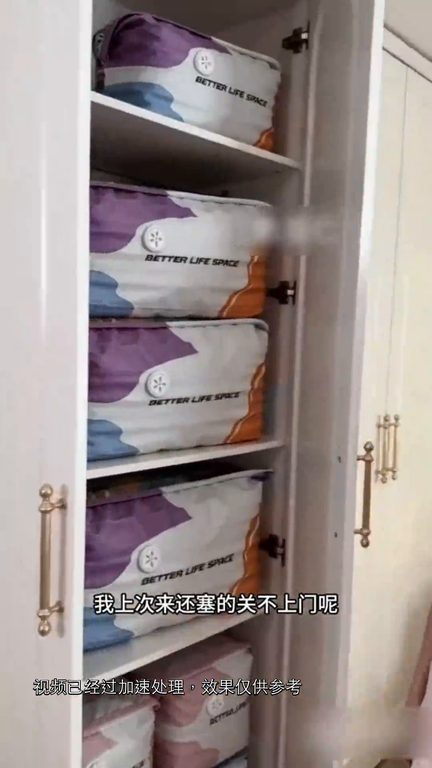
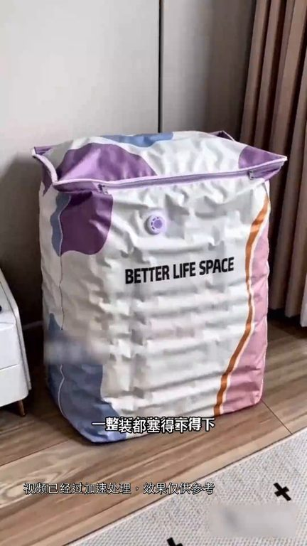
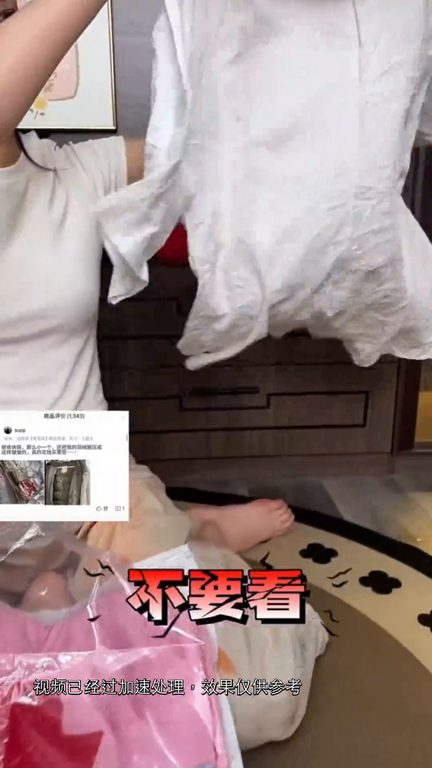
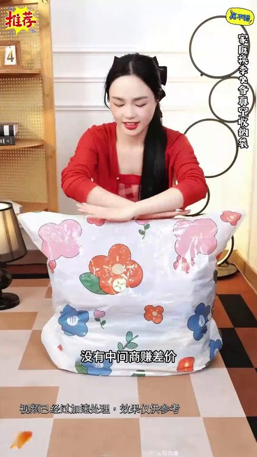

TOP 1 · 代表素材深度拆解
核心放量 强点击
视频为原始素材 HTTPS 链接；点击后加载，建议在网络环境良好时播放。
16.5万素材消耗
3.92%CTR
20.4%类目消耗占比
+0.99pp较类目均值
表现判断
该素材是类目内第 1 名，属于“核心放量”；CTR 高于类目均值。消耗体现承接规模，CTR 体现首屏与定向效率，两项应结合判断，不能仅以单指标下结论。
表达标签
口播三段式证据
开场钩子可以啊你衣柜什么时候这么整齐了我上次来S.C.都关不上门呢前靠这个收纳带郭金峰好方便啊
中段论证真的要疯这个收纳带超大容量一整桂冬装都塞得下以前一道幻记家里衣柜总是乱造造的想找件衣服就像大海捞针用了这个收纳带后不仅节省空间找衣服也方便多了但是还有多少结了婚的女人不知道收纳带到底应该怎么选首先这种书口带的不要看收了个寂寞占空间不说衣服放久了还会发霉发臭要买可真空压缩的放进衣柜节省空间的同时还能防霉防潮第二年拿出来还是香香的第二老是平面的不要看装不了两件放…
结尾转化就是严格按照上面几点选的不管是家里的各种衣服被子都能收纳五层加厚代体耐磨防穿刺防老化能重复使用五到六年而且压缩过程非常简单屁股一坐就能排气压缩完成方方正正方金衣柜好看不占空间现在厂家清仓特惠拍一发四工厂直发没有中间商赚差价错过真的没下次了赶紧去拍
有效点
- CTR 3.92% 高于类目均值 2.93%，开场或人群指向具备点击优势
- 口播包含明确到手机制或直播间指令，转化路径较完整
迭代动作
- 保留当前高效钩子，复制 3 个变量版本：人物、首句和首帧分别单变量测试
- 视频时长偏长，建议剪出 30–45 秒短版，仅保留钩子、两项证据和一次 CTA
- 复核功效、绝对化及价格稀缺措辞；增加适用边界和效果因人而异提示
合规关注

钩子建立 · 4.3s

场景/问题展开 · 32.1s

卖点证据 · 74.0s

转化收口 · 101.8s
查看完整口播摘要
可以啊你衣柜什么时候这么整齐了我上次来S.C.都关不上门呢前靠这个收纳带郭金峰好方便啊快跟我说是哪家的来我给你下单你要是下个月再能人免抽压缩带就是冤大头了现在中年活动他拍一发四件套能抢到真的赶紧去抢了家里冬装堆不下真的要疯这个收纳带超大容量一整桂冬装都塞得下以前一道幻记家里衣柜总是乱造造的想找件衣服就像大海捞针用了这个收纳带后不仅节省空间找衣服也方便多了但是还有多少结了婚的女人不知道收纳带到底应该怎么选首先这种书口带的不要看收了个寂寞占空间不说衣服放久了还会发霉发臭要买可真空压缩的放进衣柜节省空间的同时还能防霉防潮第二年拿出来还是香香的第二老是平面的不要看装不了两件放衣柜还关不上门就很难搞要买底部立体设计的一个能装五六床被子十几件羽绒服也不再画下第三要抽气蹦的不要看插垫的太吵早晚根本用不了要买免抽气排气的随时随地都能轻松收纳最后没有防皱功能的不要看把衣服压得皱皱巴巴还得运一遍就很烦人要买立体防皱设计的来年取出集穿就很方便像我家今年这款立体压缩带就是严格按照上面几点选的不管是家里的各种衣服被子都能收纳五层加厚代体耐磨防穿刺防老化能重复使用五到六年而且压缩过程非常简单屁股一坐就能排气压缩完成方方正正方金衣柜好看不占空间现在厂家清仓特惠拍一发四工厂直发没有中间商赚差价错过真的没下次了赶紧去拍